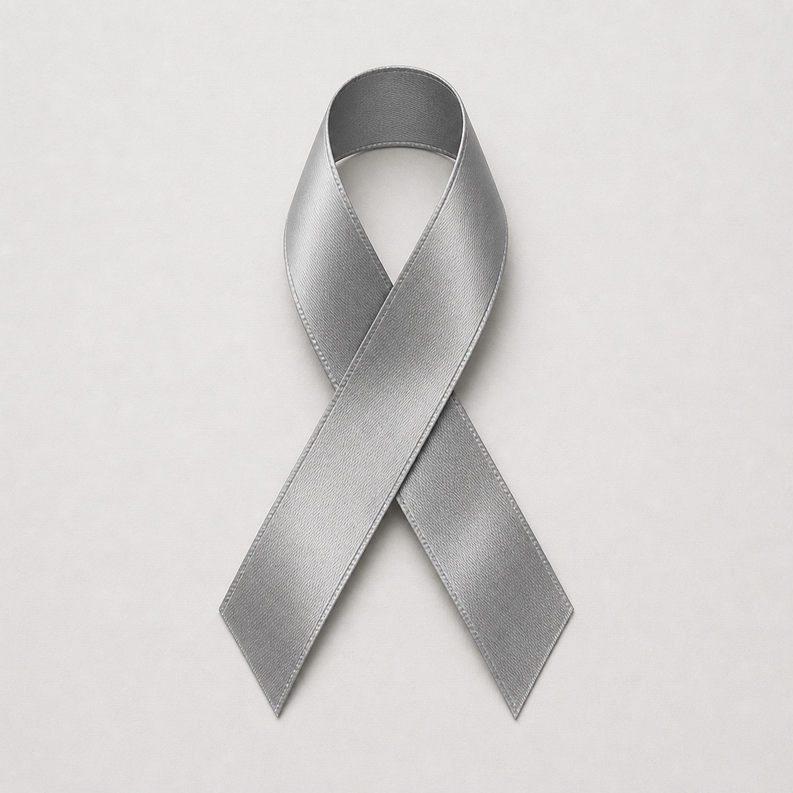

Appointment Prep
Build a clear agenda, organize records, and leave visits with fewer unanswered questions.

Cancer coaching and family navigation
Calm, practical support for people facing cancer, from the first confusing appointment through treatment decisions, daily life, and caregiving.
Focused support
Cancer Coach USA is built around the work families do between appointments: gathering questions, tracking changes, understanding options, and finding language for hard conversations.
Build a clear agenda, organize records, and leave visits with fewer unanswered questions.
Sort through treatment choices, second-opinion timing, clinical trial questions, and care-team roles.
Create realistic routines for communication, symptom notes, medication questions, and family coordination.
Make room for work, school, finances, transportation, rest, and the emotional weight of change.
Coaching pathway
Every family arrives with different needs. The coaching pathway keeps the work organized without forcing a one-size-fits-all plan.
Understand the diagnosis, immediate concerns, and who needs support.
Gather questions, records, symptom notes, care roles, and key dates.
Plan for appointments, treatment conversations, and family check-ins.
Revisit the plan as scans, symptoms, priorities, and daily life change.
Five pillars
Find grounding, encouragement, and small next steps when cancer makes life feel narrow.
Symptom care Daily changesTrack symptoms, side effects, and patterns so care-team conversations are more specific.
Nutrition Food supportPlan around appetite, energy, nausea, taste changes, and the nutrition guidance from your clinicians.
Research Clearer questionsSort through terminology, treatment options, second opinions, and clinical trial questions.
Resources Practical helpGather tools, templates, support options, and planning aids for patients and caregivers.
Contact
Share a few details and the form will prepare a message you can send from your email app. Please do not include urgent medical details in this form.
Cancer Coach USA does not replace medical care. For emergencies, call 911 or contact your care team immediately.